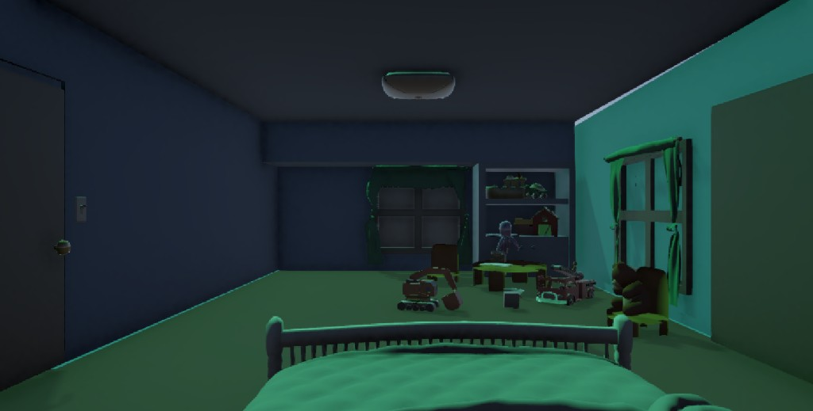
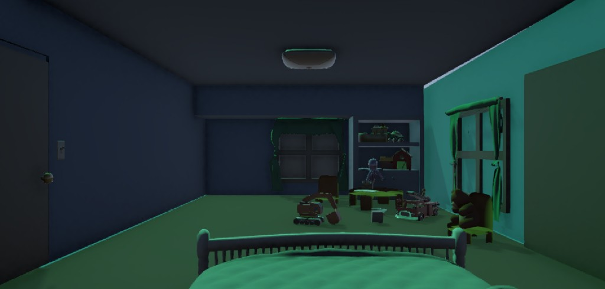
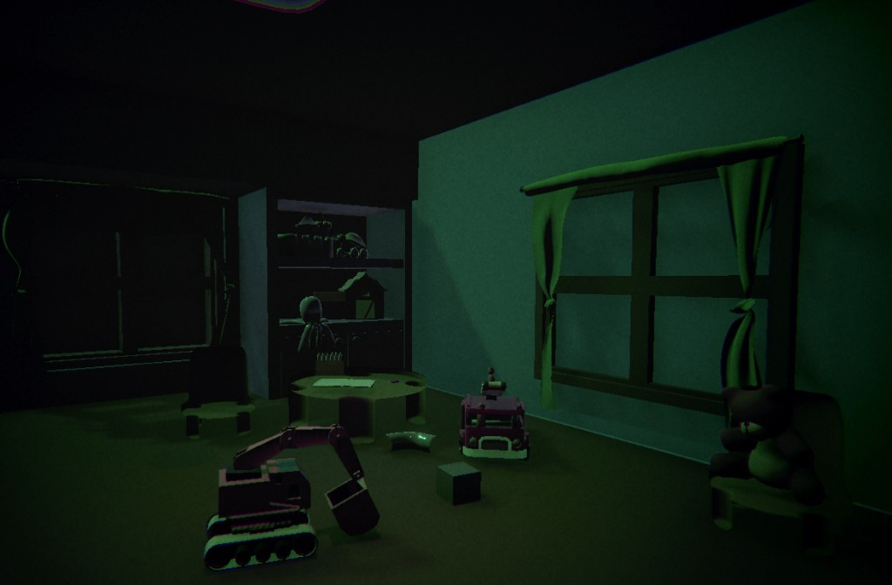
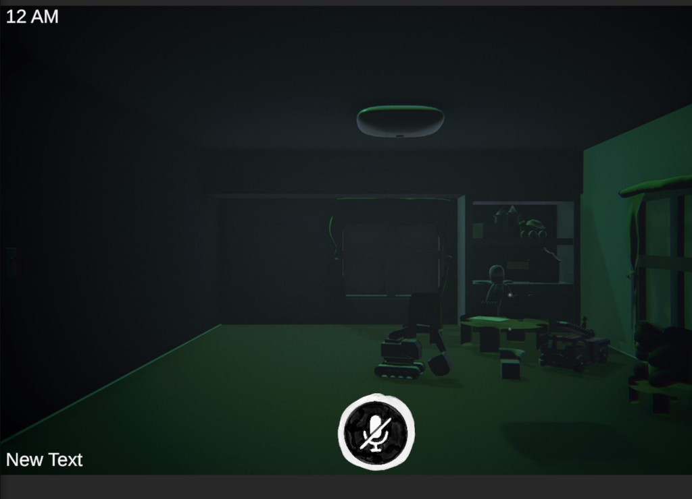
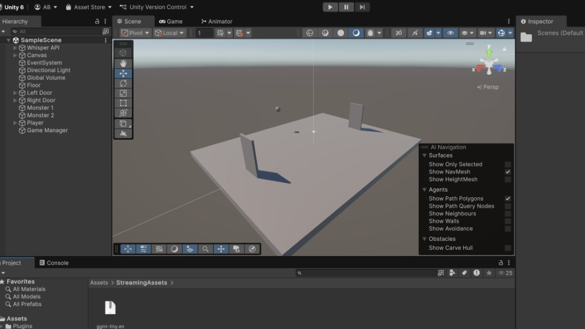
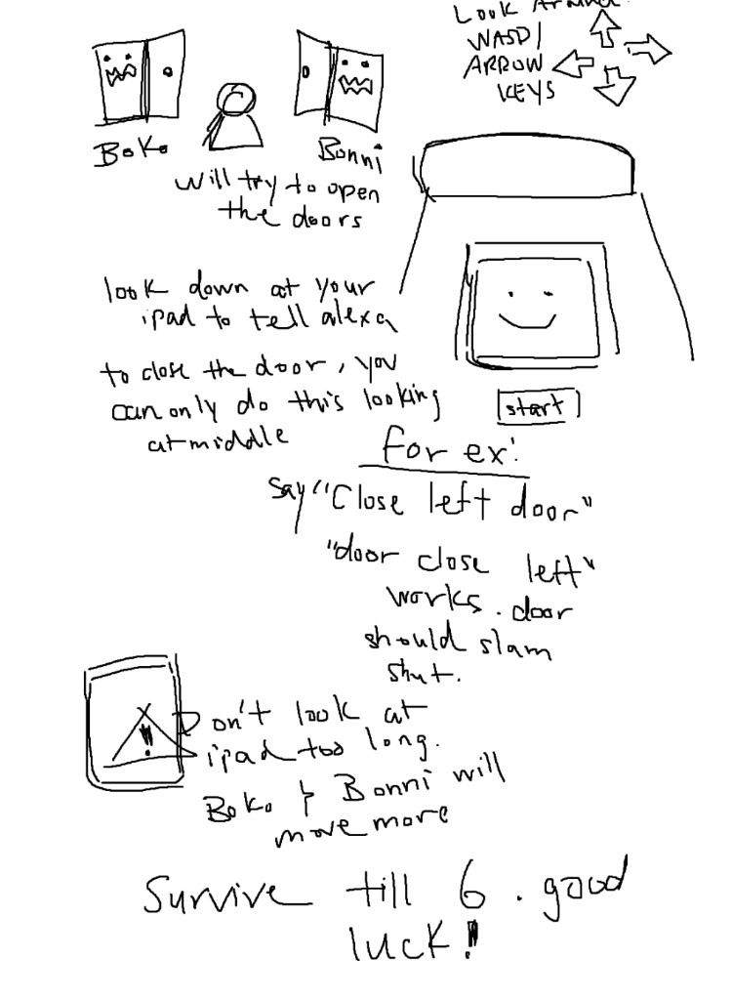

Paralysis is a group-built experimental horror game that started with one design question: How do you make a game when players can’t rely on all of their senses? We stripped away familiar visual control and built the core loop around voice instead—you interact with the world only by speaking.
Voice input drives everything. Say commands like “close left door” or “close right door” to block threats you can’t fully see or steer the way you would with a controller. The horror comes from delay, misrecognition, and the vulnerability of being heard—your voice is both tool and liability.
I worked on environmental design, helping build the bedroom where the game takes place. That space had to feel claustrophobic and familiar enough to anchor the horror—layout, props, and mood all supporting voice-only play, where you’re trapped in a room you can barely see but still have to defend.
Sensory restriction was the constraint, not a gimmick. Losing sight-based agency forces a different relationship to tension: you plan in language, react in sound, and never quite trust that the game understood you. The project asks players to sit with that friction—similar to how accessibility and horror overlap when interfaces fail you.




